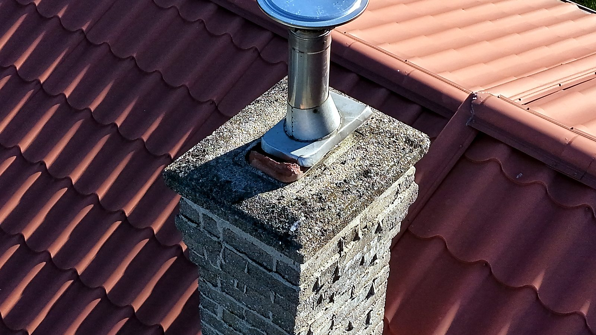
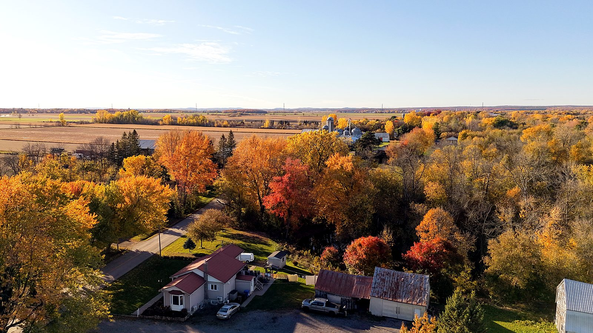
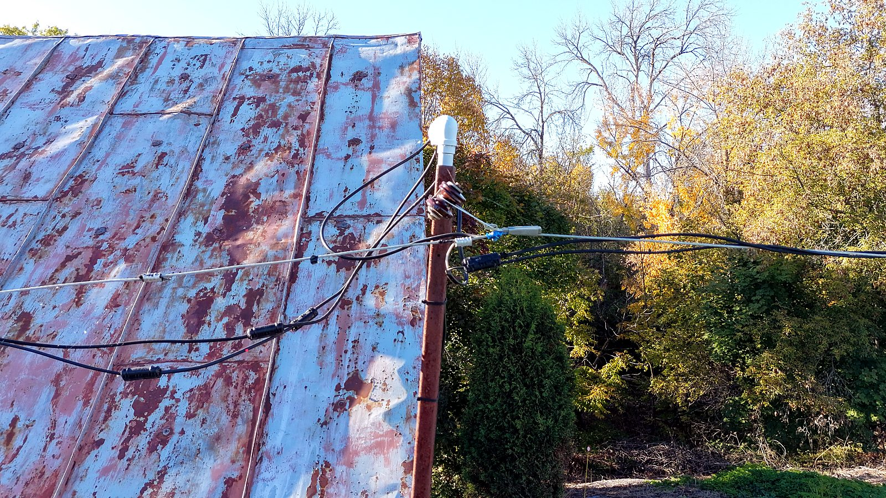
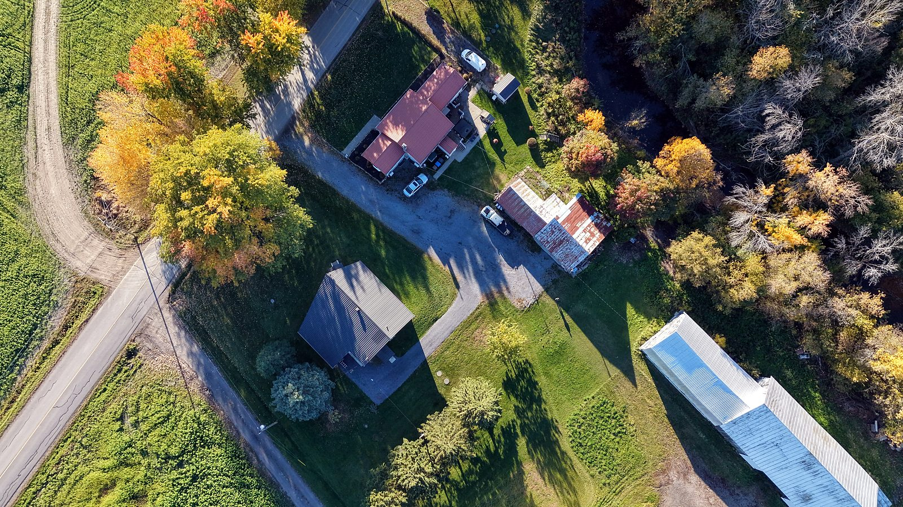
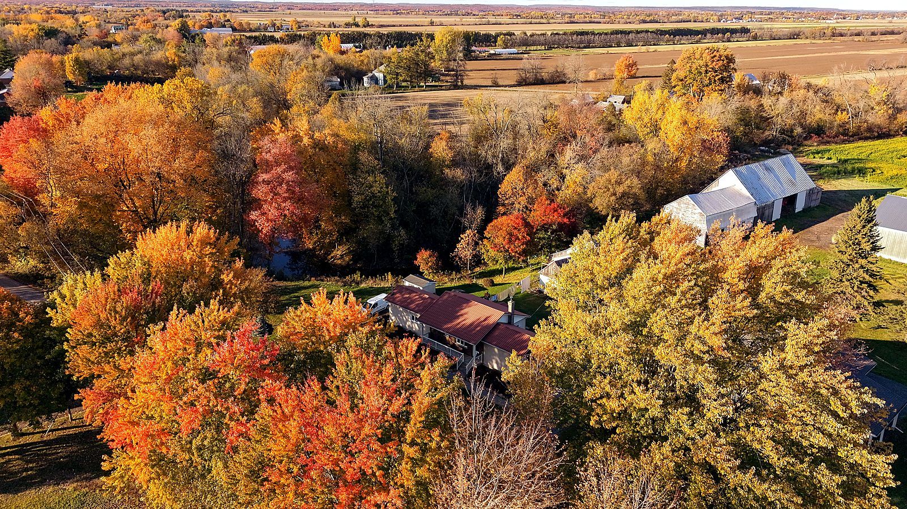
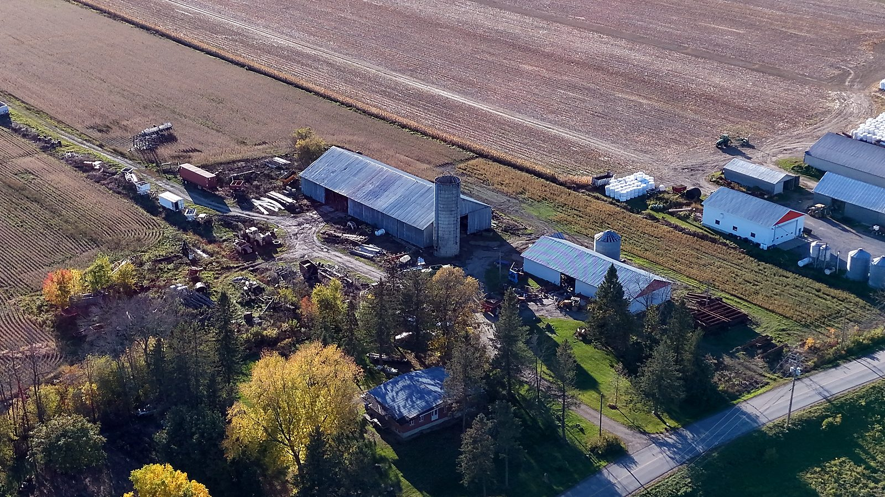

Toitures et cheminées
Bardeaux, tôle, solins, gouttières, cheminées : des photos nettes de près pour voir l'état réel.
Vidéo aérienne, inspection visuelle, suivi de chantier vu du ciel et plans 3D. On vole, on monte et on mesure : tout se fait chez nous, du vol jusqu'au fichier final.
Vous avez besoin d'une vidéo ou de photos aériennes précises, à un endroit précis ? Dites-nous ce que vous voulez voir et on va le chercher pour vous.
On s'occupe du tournage aérien en 4K et du montage complet : choix des plans, couleurs, musique et titres. Vous recevez une vidéo prête à publier sur votre site, YouTube ou les réseaux sociaux.
D'autres vidéos sur notre chaîne YouTube.
Avec un drone d'entreprise DJI Matrice 4E et une station de référence DJI D-RTK 3, on produit des relevés de haute précision.

Des photos et vidéos haute résolution de ce qu'on ne voit pas du sol. Rapide et sécuritaire : personne ne monte sur le toit.

Bardeaux, tôle, solins, gouttières, cheminées : des photos nettes de près pour voir l'état réel.

Documenter l'usure d'une maison, d'une grange ou d'un entrepôt pour planifier des travaux ou pour votre assureur.

Vue d'ensemble d'une propriété, d'une terre, d'un fossé ou d'une structure difficile d'accès.

Cimes, branches mortes et arbres à risque près des bâtiments, avant un abattage.

On survole votre chantier à intervalles réguliers (chaque semaine, chaque mois ou à chaque étape) avec les mêmes angles, pour voir clairement l'avancement.
Oui. Le pilote détient le certificat de pilote d'aéronef télépiloté pour les opérations avancées de Transports Canada, et le drone est immatriculé. L'entreprise est assurée.
Partout au Québec, dans toutes les régions : de Montréal à Québec, de l'Outaouais à la Gaspésie, de l'Estrie à l'Abitibi et au Saguenay. Basés à Saint-Cuthbert (Lanaudière), on se déplace sans problème et, avec Internet Starlink, on accepte aussi les mandats en région éloignée.
Oui. Indiquez-nous le lieu, les plans voulus et la date souhaitée. On vérifie l'espace aérien et les autorisations nécessaires, puis on vous envoie une soumission.
Oui. On s'occupe du tournage et du montage complet : choix des plans, couleurs, musique et titres. Vous recevez une vidéo prête à publier.
L'inspection visuelle donne des photos et vidéos détaillées pour voir l'état d'un toit ou d'un bâtiment. La photogrammétrie assemble des centaines de photos en un modèle 3D mesurable, pour calculer des volumes ou des superficies.
Ça dépend du type de mandat, de la superficie et de la distance. Décrivez-nous votre projet et on vous envoie une soumission gratuite.
Basés à Saint-Cuthbert, entre Montréal et Trois-Rivières, on se déplace dans toutes les régions du Québec pour les services de drone, l'abattage d'arbres et la rénovation légère. Équipés d'un pickup, d'un VTT et d'Internet Starlink, on accepte aussi les mandats en région éloignée.
Par exemple : Montréal, Québec, Laval, Gatineau, Longueuil, Sherbrooke, Trois-Rivières, Saguenay, Lévis, Terrebonne, Joliette, Repentigny, Berthierville, Sorel-Tracy, Drummondville, Saint-Jérôme, Shawinigan, Rimouski et Rouyn-Noranda, et toutes les municipalités entre les deux.
Décrivez-nous votre projet. On vous revient rapidement avec une soumission gratuite et sans engagement.